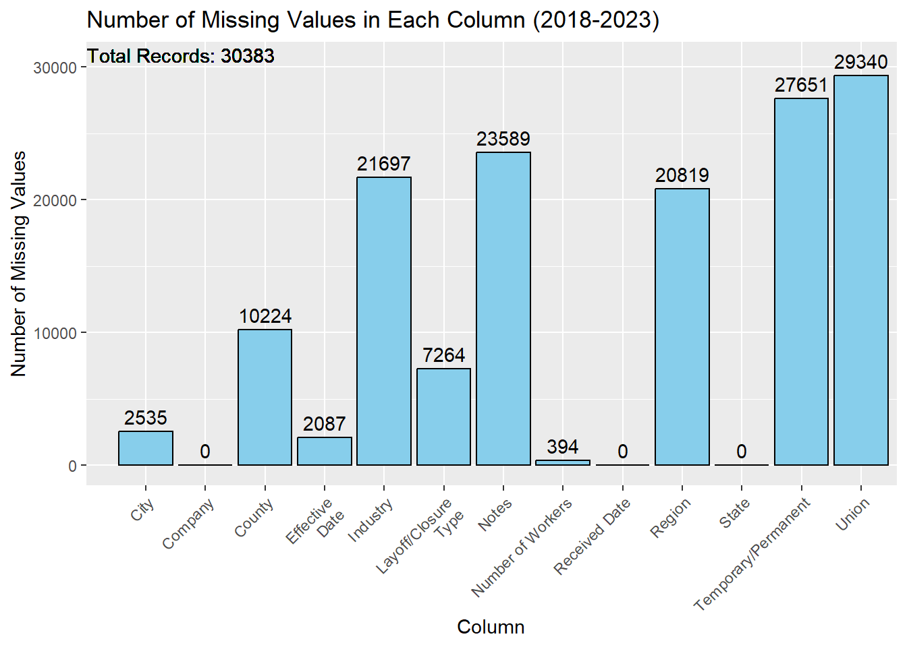

Collected by: The federal WARN Act requires large employers to give advance notice of layoffs to state governments and workers. Though states publish this information, no entity collects these layoff notices across the many states. The WARN Database standardizes WARN Notices across the country into a single dataset and the only comprehensive database of worker layoffs.
Downloaded as an xlsx file from the website
Format of the data: excel spreadsheet with the following features:
State
Company
City
Number of Workers laid off
Received Date - date when the notice was received
Effective Date - date of leaving
Layoff/Closure Type - reason for layoff
Union - union to which workers belonged to if any
Region
County
Industry - type of industry that the company belongs
Notes - further information on the reason for layoff
Frequency of updates: Monthly
Dimensions of the data: The data consists of 50218 rows and 13 columns.
Issues/problems with the data: There are two columns in the data namely: ‘Layoff/ClosureType’ and ‘Temporary/Permanent’ which have coinciding values of the reason for layoff. We will pick one which is more explanatory of the layoff cause.
Collected by Federal Reserve Economic Data from the U.S. Bureau of Labor Statistics
Download as an excel file available on the website
Format of the data : .xls file with the following features
Observation date: date on which the unemployment rate was taken
Rate of unemployment
Frequency of update: Monthly
Dimensions of the data: the data has 910 rows and 2 columns
Other relevant information: the data consists monthly employment rate from January 1984 - October 2023
Issues/problems with the data: there is no problem with the data, we will trim the data to accommodate recent years as we do not need unemployment rates as old as 1984.
Format of the data: .csv file with the following features:
Date
Open - opening prices for the day
High - highest price of the day
Low - lowest price of the day
Close - closing prices for the day
Frequency of the data: Daily
Dimensions of the data: The data has 4089 rows and 5 columns
Other relevant information: The data ranges from September 2007 to November 2023
Plan to import the data: We have downloaded the data from the sources mentioned above and will be using it in our R workspace for further analysis.
2.2 Research Plan
Commencing our analysis, we will direct our attention to current layoff statistics over time, with the aim of understanding prevailing trends in the job market landscape. If current layoff data shows a notable increase, we can reasonably infer a potentially challenging job market scenario.
Simultaneously, we will conduct a comparative analysis with key US stock indices, particularly the S&P 500, to identify potential correlations with market performance. We anticipate a negative correlation, suggesting that a sluggish market performance may coincide with an uptick in current job terminations as organizations strive to optimize expenditures amidst reduced business activity.
Deepening our inquiry, our objective will be to identify patterns that could serve as indicators for current trajectories. Leveraging current layoff data, we will systematically identify sectors experiencing higher instances of workforce reduction. With a focus on the period from 2018 to 2023, encompassing the last five years, we acknowledge the challenge of comparing raw layoff numbers across industries due to variations in total employment. Therefore, our approach will involve an intra-industry comparison over time, aiming to distill trends that may identify the most impacted sectors. Conversely, industries with a relative absence of pronounced spikes in current layoffs may be considered more resilient in economic downturns.
Expanding our analysis, we will shift focus to a geographically nuanced examination of trends within the current US landscape. This aims to determine whether specific states or regions bear a disproportionate burden of current layoffs. Integrating current regional data with industry-specific metrics will provide insights into whether certain industries within particular states face more challenging economic circumstances.
Continuing our trajectory, we will examine the current temporal dynamics of layoffs, looking at the pace at which organizations are implementing workforce reductions. Analyzing the time organizations are affording employees to adapt to impending layoffs across diverse industries, we will also consider state-by-state variations to understand the influence of current regional legislative frameworks.
Examining the causative factors behind current layoffs available in data, we will undertake a meticulous analysis to identify predominant factors shaping current workforce reduction scenarios. This investigative phase, adopting a region-wise and state-wise lens, will aim to discern nuanced patterns that may emerge.
Finally, our analysis will integrate unemployment rate data to understand the post-layoff trajectories of affected individuals. This examination seeks to ascertain whether individuals subjected to current layoffs will transition swiftly into alternative employment or contribute to an uptick in current unemployment rates by remaining unemployed.
2.3 Missing value analysis
We will now investigate our data to check for any missing values.
Code
library(dplyr)
Attaching package: 'dplyr'
The following objects are masked from 'package:stats':
filter, lag
The following objects are masked from 'package:base':
intersect, setdiff, setequal, union
data <-read_excel("./data/Raw/Layoff/WARN Database 10-31-2023 [TO EDIT_ FILE-_MAKE A COPY].xlsx")head(data, 5)
# A tibble: 5 × 13
State Company City `Number of Workers` `Received Date` `Effective\n Date`
<chr> <chr> <chr> <dbl> <dttm> <chr>
1 Utah SKF Salt… 108 2023-12-04 00:00:00 <NA>
2 Utah Walgre… Salt… 70 2023-11-29 00:00:00 <NA>
3 Alab… Thermo… Aubu… 97 2023-11-03 00:00:00 45293.0
4 Mass… Omnica… Peab… 53 2023-11-03 00:00:00 45298.0
5 Geor… All FA… Fair… 50 2023-11-02 00:00:00 45291.0
# ℹ 7 more variables: `Layoff/Closure\n Type` <chr>,
# `Temporary/Permanent` <chr>, Union <chr>, Region <chr>, County <chr>,
# Industry <chr>, Notes <chr>
Let’s check for the distribution of missing values across columns in our data.
Code
# Calculate the number of missing values in each columnmissing_values <-sapply(data, function(x) sum(is.na(x)))# Calculate the total number of records in the datasettotal_records <-nrow(data)# Create a data frame for plottingmissing_data_df <-data.frame(Column =names(missing_values), Missing_Values = missing_values)# Create a bar chart using ggplot2 with text labels on top and total recordsggplot(missing_data_df, aes(x = Column, y = Missing_Values)) +geom_bar(stat ="identity", fill ="skyblue", color ="black") +geom_text(aes(label = Missing_Values), vjust =-0.5, color ="black") +geom_text(aes(x =0, y = total_records +5, label =paste("Total Records:", total_records)),hjust =0, vjust =0, color ="black" ) +labs(title ="Number of Missing Values in Each Column",x ="Column",y ="Number of Missing Values" ) +theme(axis.text.x =element_text(angle =45, hjust =1))
We can make the following observations:
We have Company and State information for all records.
‘Union’ and ‘Temporary/Permanent’ information is missing for almost all records, so we cannot include them in our analysis.
We have around 612 records with no information of the ‘Number of Workers’ laid off, so these records cannot contribute to our analysis.
Columns like ‘Notes’, and ‘Region’ have high fraction of missing values but they don’t play a major role in our analysis.
The high fraction of missing values in ‘Industry’ coulmn, however, could limit our industry wise analysis. Since the critical parts of our analysis will depend on the last 5 years, we can check the missing ratio in that time interval to check if it’s any better.
Code
data$`Received Date`<-as.POSIXct(data$`Received Date`, format ="%Y-%m-%d %Z")# Filter for values after 2018filtered_data <- data %>%filter(`Received Date`>as.POSIXct("2018-01-01"))# Calculate the number of missing values in each columnmissing_values <-sapply(filtered_data, function(x) sum(is.na(x)))# Calculate the total number of records in the datasettotal_records <-nrow(filtered_data)# Create a data frame for plottingmissing_data_df <-data.frame(Column =names(missing_values), Missing_Values = missing_values)# Create a bar chart using ggplot2 with text labels on top and total recordsggplot(missing_data_df, aes(x = Column, y = Missing_Values)) +geom_bar(stat ="identity", fill ="skyblue", color ="black") +geom_text(aes(label = Missing_Values), vjust =-0.5, color ="black") +geom_text(aes(x =0, y = total_records +5, label =paste("Total Records:", total_records)),hjust =0, vjust =0, color ="black" ) +labs(title ="Number of Missing Values in Each Column (2018-2023)",x ="Column",y ="Number of Missing Values" ) +theme(axis.text.x =element_text(angle =45, hjust =1))

We do not see any good signs in this time interval since the fraction of missing values in the ‘Industry’ column is still high. Although, we see that we don’t have any missing values in the ‘Number of Workers’ laid off.
Now, switching back to our original dataset, let’s drop the ‘Union’, ‘Temporary/Permanent’, ‘Notes’, ‘Region’ columns before we deep dive into our missing values analyis as they might shadow the otherwise interesting patterns. We will also drop records with missing values in the ‘Number of Workers’ laid off.
Code
# Clean the datadata <- data |>select(-"Union", -"Temporary/Permanent", -"Notes", -"Region")data <- data[!is.na(data[, "Number of Workers"]), ]head(data)
# A tibble: 6 × 9
State Company City `Number of Workers` `Received Date` `Effective\n Date`
<chr> <chr> <chr> <dbl> <dttm> <chr>
1 Utah SKF Salt… 108 2023-12-04 00:00:00 <NA>
2 Utah Walgre… Salt… 70 2023-11-29 00:00:00 <NA>
3 Alab… Thermo… Aubu… 97 2023-11-03 00:00:00 45293.0
4 Mass… Omnica… Peab… 53 2023-11-03 00:00:00 45298.0
5 Geor… All FA… Fair… 50 2023-11-02 00:00:00 45291.0
6 Nebr… Bank o… Omaha 41 2023-11-02 00:00:00 45317.0
# ℹ 3 more variables: `Layoff/Closure\n Type` <chr>, County <chr>,
# Industry <chr>
Now, to identify patterns in missing values, we added a new feature to the redav package to address the chalenges of large datasets. We added the parameter ‘threshold’. This controls the percentage of records covered by patterns to be displayed in the graph. For example, if we want to just display patterns which cover 90% of our data, we can pass a value of 0.9.
Let’s check for the distribution of missing values across columns in our data.
Code
# Calculate the number of missing values in each columnmissing_values <-sapply(data, function(x) sum(is.na(x)))# Calculate the total number of records in the datasettotal_records <-nrow(data)# Create a data frame for plottingmissing_data_df <-data.frame(Column =names(missing_values), Missing_Values = missing_values)# Create a bar chart using ggplot2 with text labels on top and total recordsggplot(missing_data_df, aes(x = Column, y = Missing_Values)) +geom_bar(stat ="identity", fill ="skyblue", color ="black") +geom_text(aes(label = Missing_Values), vjust =-0.5, color ="black") +geom_text(aes(x =0, y = total_records +5, label =paste("Total Records:", total_records)),hjust =0, vjust =0, color ="black" ) +labs(title ="Number of Missing Values in Each Column",x ="Column",y ="Number of Missing Values" ) +theme(axis.text.x =element_text(angle =45, hjust =1))
We can see that we have no missing values.
2.3.3 Stock Market Dataset (S&P500)
Code
data <-read.csv("./data/Raw/Stock_Indices/HistoricalPrices.csv")head(data, 5)
Date Open High Low Close
1 11/29/23 4571.84 4587.64 4547.15 4550.58
2 11/28/23 4545.55 4568.14 4540.51 4554.89
3 11/27/23 4554.86 4560.52 4546.32 4550.43
4 11/24/23 4555.84 4560.31 4552.80 4559.34
5 11/22/23 4553.04 4568.43 4545.05 4556.62
Let’s check for the distribution of missing values across columns in our data.
Code
# Calculate the number of missing values in each columnmissing_values <-sapply(data, function(x) sum(is.na(x)))# Calculate the total number of records in the datasettotal_records <-nrow(data)# Create a data frame for plottingmissing_data_df <-data.frame(Column =names(missing_values), Missing_Values = missing_values)# Create a bar chart using ggplot2 with text labels on top and total recordsggplot(missing_data_df, aes(x = Column, y = Missing_Values)) +geom_bar(stat ="identity", fill ="skyblue", color ="black") +geom_text(aes(label = Missing_Values), vjust =-0.5, color ="black") +geom_text(aes(x =0, y = total_records +5, label =paste("Total Records:", total_records)),hjust =0, vjust =0, color ="black" ) +labs(title ="Number of Missing Values in Each Column",x ="Column",y ="Number of Missing Values" ) +theme(axis.text.x =element_text(angle =45, hjust =1))